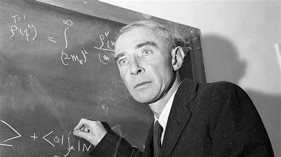

Oppenheimer

Oppenheimer
2023
Cast
Cillian Murphy
J. Robert Oppenheimer
Emily Blunt
Kitty Oppenheimer

Robert Downey Jr.
Lewis Strauss

Matt Damon
Leslie Groves
J. Robert Oppenheimer: The Father of the Atomic Bomb
J. Robert Oppenheimer was an American theoretical physicist who is often credited as the "father of the atomic bomb." He was born in New York City in 1904 and grew up in a wealthy and cultured household. Oppenheimer was a brilliant student and excelled in physics, mathematics, and poetry. He attended Harvard University, where he graduated summa cum laude in 1925.
After graduating from Harvard, Oppenheimer went on to study at the University of Cambridge in England. He then returned to the United States to work as a research assistant at the California Institute of Technology. In 1929, Oppenheimer was awarded a Ph.D. in physics from the University of California, Berkeley.
After completing his Ph.D., Oppenheimer held a number of academic positions, including a professorship at the University of California, Berkeley. In 1942, he was recruited to work on the Manhattan Project, the top-secret U.S. government project to develop the atomic bomb. Oppenheimer was appointed director of the Los Alamos Laboratory in New Mexico, where he oversaw the development of the bomb.
The atomic bomb was successfully tested in New Mexico in July 1945. Two atomic bombs were then dropped on the Japanese cities of Hiroshima and Nagasaki, leading to the end of World War II. After the war, Oppenheimer became a vocal critic of the development of nuclear weapons. He warned of the dangers of nuclear proliferation and called for international control of nuclear weapons.
Oppenheimer died in 1967 at the age of 62. He is remembered as one of the most brilliant physicists of his generation, and his legacy continues to be debated today.